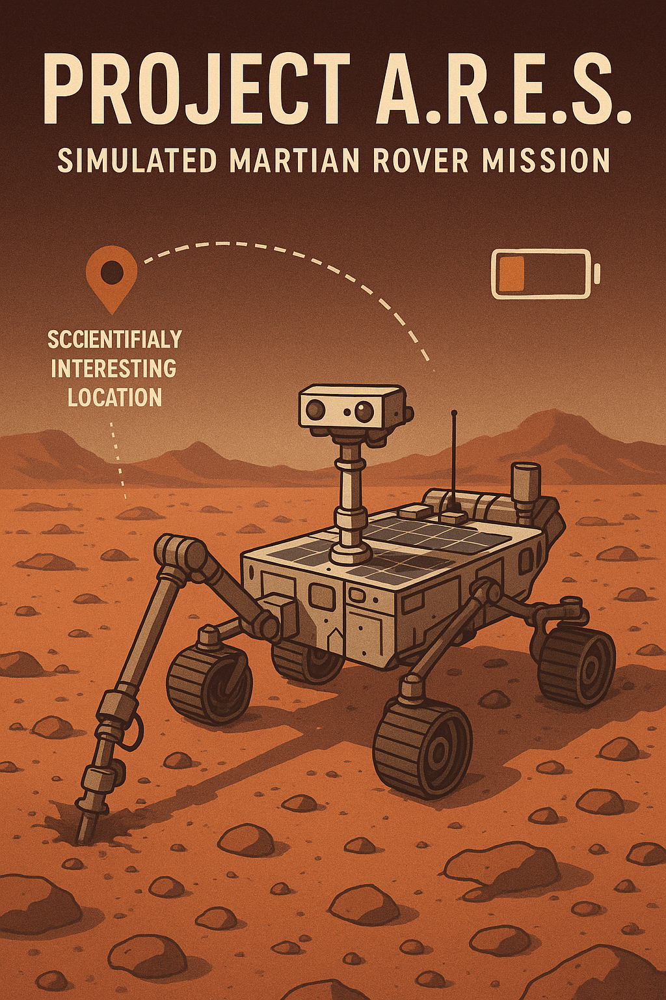

7 Chapter 6: Capstone Project - A.R.E.S.
7.1 Autonomous Rover for Exploration and Science
7.1.1 Introduction: Your Mission
Welcome to your final challenge. You have spent this semester acquiring a powerful computational toolkit. Now, it’s time to synthesize that knowledge to solve a complex, multi-domain engineering problem.
You are the lead software engineer for Project A.R.E.S., a simulated Martian rover mission. The rover’s goal is to visit scientifically interesting locations, deploy a robotic arm, and drill for samples to analyze. Your mission is constrained by two critical resources: mission time and battery power.
Your task is to design, model, and simulate the rover’s planning and control systems. You will determine the optimal sequence of actions to maximize the scientific return of the mission, while respecting the physical limitations of the hardware. This project will directly test your skills in linear algebra, system dynamics (Laplace transforms), partial differential equations, and optimization.

7.1.2 Project Structure & Core Modules
The project is divided into five interconnected modules. Each module builds upon concepts from your previous lab experiments and contributes essential parameters to the final mission plan.
7.1.3 Module 1: Kinematics & World Modeling
(Concepts from: Lab 1 - Linear Algebra)
The first step is to mathematically describe the rover, its arm, and its environment.
Task 1: The World Frame. Create a 2D map in Python. Define the rover’s starting position (e.g.,
(0, 0)) and the coordinates of two scientific targets (e.g., Target A:(5, 8), Target B:(12, 4)).Task 2: The Robotic Arm. Model the rover’s 2-link planar arm.
- Implement a Forward Kinematics function. This function will take the two joint angles, \((\theta_1, \theta_2)\), and the link lengths, \((L_1, L_2)\), as input and must return the
(x, y)position of the drill bit (end-effector) in the rover’s own coordinate frame. - Relevant Skill: Use transformation matrices or trigonometry, as learned in early array operations.
- Implement a Forward Kinematics function. This function will take the two joint angles, \((\theta_1, \theta_2)\), and the link lengths, \((L_1, L_2)\), as input and must return the
Task 3: Coordinate Transformations. Write a function that converts the drill’s local coordinates to the global world frame coordinates. This is essential for verifying that the rover has positioned itself correctly to reach a target on the map.
Deliverable: A Python script (
kinematics.py) with functions for forward kinematics and coordinate transformation. Include a simplematplotlibplot showing the rover and its arm reaching for a target point.
7.1.4 Module 2: Arm Control & System Dynamics
(Concepts from: Lab 3 & 4 - Laplace Transforms & ODEs)
A real motor doesn’t move instantly. We must model its dynamic response to determine how long it takes to stabilize.
Task 1: System Modeling. Model a single joint of the robotic arm as a classic second-order mass-spring-damper system. The differential equation for its angular position, \(\theta(t)\), in response to a commanded target angle, \(\theta_{ref}(t)\), is: \[ I \frac{d^2\theta}{dt^2} + c \frac{d\theta}{dt} + k \theta(t) = k \theta_{ref}(t) \] Use the following parameters: Inertia \(I=1\), Damping \(c=4\), and Stiffness \(k=13\).
Task 2: Laplace Analysis.
- Assume the rover commands the joint with a unit step input (i.e., \(\theta_{ref}(t) = u(t)\)).
- Using the skills from Experiment 7, solve this ODE with the Laplace Transform method in
sympy. Assume the arm starts from rest: \(\theta(0)=0\) and \(\dot{\theta}(0)=0\).
Task 3: Constraint Discovery - Settling Time.
- Plot the symbolic solution \(\theta(t)\).
- From your plot and data, determine the settling time: the time it takes for the joint’s angle to get to and stay within 2% of its final value (which is 1.0). This
settling_timeis a critical mission parameter—it’s the minimum time the rover must wait for the arm to be stable before drilling.
Deliverable: A Python script (
dynamics.py) that solves the ODE and plots the step response. Clearly state the calculatedsettling_time.
7.1.5 Module 3: Thermal Management During Drilling
(Concepts from: Lab 2 - Partial Differential Equations)
Drilling generates significant heat. If the drill bit overheats, it can be damaged. We must model this to find safe operational limits.
Task 1: Heat Modeling. Model the drill bit as a 1D rod of length \(L=0.2\) m. The temperature evolution, \(u(x,t)\), is governed by the 1D Heat Equation with an internal heat source term, \(Q\), representing friction from drilling: \[ \frac{\partial u}{\partial t} = \alpha \frac{\partial^2 u}{\partial x^2} + Q \] Use parameters: \(\alpha=10^{-5}\) (thermal diffusivity for steel) and a heat generation rate of \(Q=50\) (while drilling). Assume the ends of the drill are exposed to the cold Martian atmosphere, so we use boundary conditions: \(u(0,t) = u(L,t) = 0^\circ C\).
Task 2: Numerical Solution. Implement a Finite Difference Method (like the FTCS scheme from Experiment 3) to solve this PDE.
Task 3: Constraint Discovery - Duty Cycle.
- Simulate the temperature rise, starting from \(u(x,0) = 0^\circ C\) with the heat source on (\(Q=50\)).
- Determine the maximum time the rover can continuously drill before any point on the bit exceeds a safety limit of 80°C.
- Next, turn the heat source off (\(Q=0\)) and determine how long it takes for the peak temperature to drop back down to a safe level (e.g., 20°C).
- This gives you a Drill/Cool Duty Cycle (e.g., “Drill for 45s, then must cool for 30s”). This is another critical input for the mission planner.
Deliverable: A Python script (
thermal.py) that solves the PDE and outputs the calculated drill and cool times.
7.1.6 Module 4: Optimal Mission Planning
(Concepts from: Lab 5 - Optimization)
With all physical constraints defined, we can now determine the best mission plan.
- Task 1: Define Mission Parameters.
- Science Value: Drilling at Target A yields 100 points. Drilling at Target B yields 150 points.
- Drilling Requirements: Target A requires 60s of total drilling. Target B requires 90s.
- Mission Constraints: Total Time \(\le 900\)s. Total Energy \(\le 50,000\) J.
- Task 2: Define Activity Costs.
- Driving: 20 J/s. Time is calculated from distance (assume speed of 1 m/s).
- Arm Movement: 500 J per deployment. Takes the
settling_timefrom Module 2. - Drilling: 100 J/s. Must be broken into cycles based on the duty cycle from Module 3.
- Cooling/Idle: 5 J/s.
- Task 3: LP Formulation. Formulate this as a Linear Programming problem.
- Decision Variables: A clever way to formulate this is to define variables for each path, e.g., \(x_{start \to A \to B}\), \(x_{start \to B \to A}\), \(x_{start \to A}\), etc. Let these variables be binary (0 or 1).
- Objective Function: Write an equation for the total science points based on which path is chosen. Your goal is to maximize this function.
- Constraints: Write linear equations for total time and total energy consumed for each possible path. Ensure these are less than or equal to the mission limits.
- Deliverable: A Python script (
optimizer.py) usingscipy.optimize.linprogthat solves the LP problem and outputs the best plan (e.g., “Go to Target B, drill, and return”) and the corresponding maximum science score.
7.1.7 Module 5: Integrated Mission Simulation
This is the capstone deliverable, where everything comes together.
Task: Create a live “Mission Dashboard” using
matplotlib.animation. The dashboard will visualize the optimal plan determined in Module 4. It should contain several subplots that update in real-time:- World View: A 2D plot showing the map and a rover icon moving along the optimal path.
- System Status: Text readouts for
Mission Time,Energy Remaining, andCurrent Action. - Arm Dynamics Plot: When the rover’s action is “Deploying Arm”, this plot shows the joint angle settling over time, as modeled in Module 2.
- Drill Temperature Plot: When the action is “Drilling” or “Cooling”, this plot shows the temperature profile of the drill bit evolving according to the PDE solution from Module 3.
Final Deliverable: A single, executable Python script
main.pythat runs the entire simulation, integrating the logic from all other modules.
7.1.8 Submission Requirements
- Codebase: A folder containing all your Python scripts (
kinematics.py,dynamics.py,thermal.py,optimizer.py,main.py). - Project Report: A Quarto (
.qmd) or PDF report detailing the mathematical formulation, design choices, results, and discussion for each module. - Demonstration: A short video (e.g., screen recording) of your final simulation running on your local machine.